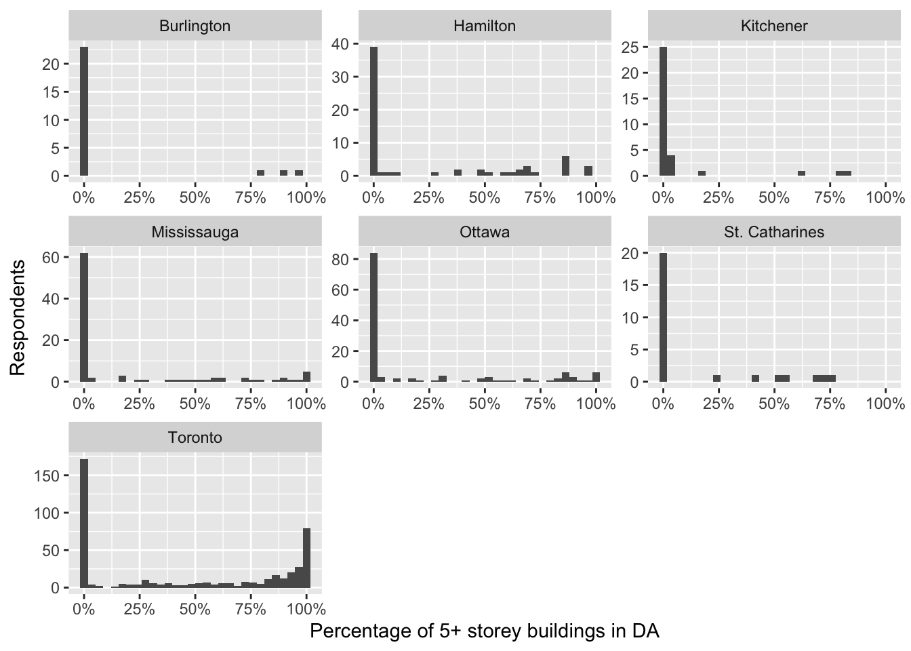
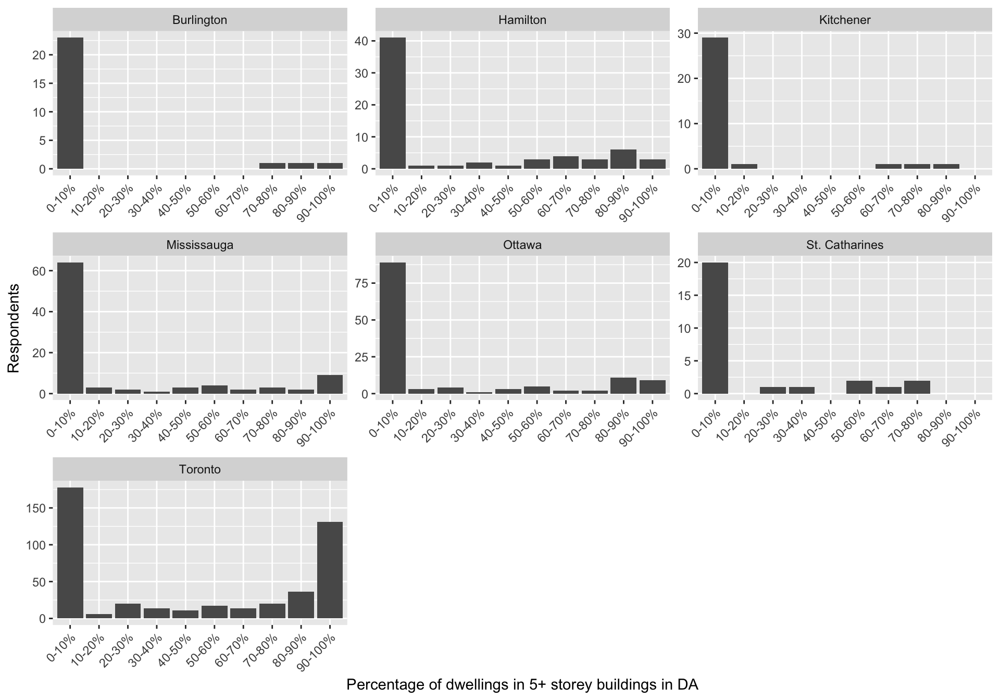

# A tibble: 197 × 2
CSDNAME2021 n
<chr> <int>
1 Toronto 481
2 Ottawa 133
3 Mississauga 100
4 Brampton 77
5 Hamilton 69
6 London 52
7 Markham 47
8 Vaughan 38
9 Oshawa 36
10 Kitchener 34
11 Richmond Hill 34
12 Burlington 27
13 St. Catharines 27
14 Windsor 26
15 Greater Sudbury / Grand Sudbury 25
16 Kingston 25
17 Barrie 23
18 Guelph 23
19 Brantford 20
20 Cambridge 20
# ℹ 177 more rowsAvailable Building Permit Data
Introduction
The general idea was to see if we can use published building permits to identify local projects of densification to see if respondents in our Ontario 2022 survey who have experienced densification in their neighbourhood differ in their attitudes to housing policy than those who have not.
Backgrounds
Rafael found several municipalities that publishe different types of building permits. The thing is, we need to link the building permits to residents in our survey, so it only makes sense to find building permits for municipalities that are represented in our survey. Here are the most represented municipalities in our data.
[1] 871Of these municipalities, we found good building permit data for Toronto, Ottawa, Mississauga, Hamilton, Burlington, St. Catharine’s and Kitchener. If we took those municipalities, we would have 871 cases, essentially stretching across the GTHA plus Kitchener.
Variables Available by Municipality
One of the problems is that each file collects somewhat different information and stores them with differet variable names. Table 1 summarizes the variables that are available in these building-permit data.
| Variable | Plain-language summary | Toronto | Ottawa | Mississauga | Hamilton | Kitchener | St. Catharines | Burlington |
|---|---|---|---|---|---|---|---|---|
| Permit Type | The kind of permit or application (e.g., building, demolition, plumbing). | PERMIT_TYPE |
APPL. TYPE |
SCOPE |
WORKCLASS |
Permit Type |
FOLDERDESC |
FOLDERTYPE |
| Structure Type | The kind of building the permit covers (e.g., single detached house, townhouse, apartment, commercial). | STRUCTURE_TYPE |
BLG TYPE |
BLDG_TYPE |
PERMITCLAS |
Sub Work Type |
— | SUBDESC |
| Work | A description of the work being done (e.g., new building, addition, interior alteration). | WORK |
DESCRIPTION |
DESCRIPTIO |
DESCRIPTIO |
Work Type |
FOLDERDE_1 |
WORKDESC |
| Issued Date | The date the city issued the permit. | ISSUED_DATE |
ISSUED DATE |
ISSUE_DATE |
ISSUEDDATE |
Issue Date |
ISSUEDATE |
ISSUEDATE |
| Completed Date | The date the work was finished and the permit was closed. | COMPLETED_DATE |
— | COMPLETE_D |
COMPLETEDD |
Final Date |
— | — |
| Street Address | Where the property is. | STREET_NUMSTREET_NAMESTREET_TYPE |
ST #ROAD |
ADDRESS |
ORIGINALAD |
Foldername |
PROPERTYNA |
ADDRESS |
| Current Use | How the building or property is used before the work. | CURRENT_USE |
— | — | — | — | — | — |
| Proposed Use | How the building or property will be used after the work. | PROPOSED_USE |
— | — | — | Permit Description |
FOLDERDE_1 |
SUBDESC |
| Postal Code | The property’s postal code. | POSTAL |
PC |
POSTAL_COD |
ORIGINALZI |
— | PROPPOSTAL |
— |
| Dwelling Units Created | The number of new homes (residential units) the project adds. | DWELLING_UNITS_CREATED |
D.U. |
RES_UNITS |
— | Units Created |
— | RESUNITS |
| Status | Where the permit stands (e.g., issued, under inspection, closed, cancelled). | STATUS |
— | STATUS |
STATUSCURR |
Permit Status |
STATUSDESC |
FOLDERSTAT |
Dates
All municipalities include an “issued date” variable, but only four municipalities (Toronto, Mississauga, Hamilton and Kitchener) have a “completed date”. There are advantages and disadvantages to using both.
on the one hand, going with the “issue date” variable will give us a larger sample size. Plus, having building permits issued might actually spur some NIMBY opposition. I feel like it’s not unfrequent for neighbours to keep an eye on what is happening. But, building permits being issued might not actually mean that the project was actually completed. My own view is that we should start with the completed date variable and see how well we do. That would give us Toronto, Mississauga, Hamilton and Kitchener. There are 684 respondents in those cities.
We may end up throwing some of those away as I think it’s going to make the most sense to restrict the analysis to respondents who are only in low-density neighbourhoods. We don’t really care what tower-dwellers think of densification. The problem revolves around how to get people in low-density neighbourhoods to accept densification.
Some municipalities have building permits that go back to 2017, I don’t think we want to include those. The logic would be that utlimately people would become acclimatized to densification, or more respondents than not will have chosen to move into that neighbourhood. I suggest restricting projects to those that were completed in 2021 or 2022, prior to the campaign.
Residential Units Created
Three of the four cities here (Hamilton excepted) have a variable that encapsulates the number of dwelling units created.
Many of these building permits are in fact permits alterations to structures (think a deck or an interior renovation), but we can’t just throw these away as there are variables in these data sets that describe demolitions as well. And we need to make use of that to find densification projects because, a single family dwelling that is torn down and has a building permit to build a new SFD is not densification. But an existing SFD that is renovated to add a unit is densification. However, just to get a sense of these data, I am going to temporarily exclude any building permits that do not create any units and show some basic summary statistics of what is left.
The scales are really wonky in the distribution because the vast majority of these building permits are for 1 unit, but they do also include permits for a few towers.
# A tibble: 3 × 10
municipality n missing min q1 median mean q3 max sd
<chr> <int> <int> <dbl> <dbl> <dbl> <dbl> <dbl> <dbl> <dbl>
1 Kitchener 1527 0 1 1 1 1.95 1 344 12.9
2 Mississauga 772 0 1 1 1 4.07 1 603 33.5
3 Toronto 2567 0 1 1 1 5.72 1 913 43.8This is a visualization.

One problem in the data-set is that there are sometimes more than one building permit issued for for developments that include multiple dwellings at the same address; think a new duplex on a block. So, we need to calculate how many new units are created at unique addresses.
Then we can filter out building permits that are for larger towers and that actually don’t create any new dwellings at an address. I’m going to define mild densification as building permits that add between 1 and 6 units at the same address.
These are 100 random samples in the Toronto, Mississauga and Kitchener datasets showing these projects.
| municipality | street_address | permit_type | dwelling_units_created |
|---|---|---|---|
| Mississauga | 1945 BARBERTOWN RD | NEW BUILDING | 1 |
| Toronto | 62 EDENVALE CRES | New Houses | 1 |
| Toronto | 100 GLENGOWAN RD | New Houses | 2 |
| Mississauga | 729 GARDNER AVE | NEW BUILDING | 1 |
| Toronto | 150 DUNCAIRN RD | New Houses | 1 |
| Toronto | 154 HAMILTON ST | New Houses | 1 |
| Toronto | 39 TREMONT CRES | New Houses | 1 |
| Toronto | 82 HILLHURST BLVD | New Houses | 1 |
| Toronto | 6 BAYTREE CRES | New Houses | 1 |
| Toronto | 200 MCROBERTS AVE | New Houses | 2 |
| Toronto | 226 ASHWORTH AVE | Small Residential Projects | 1 |
| Toronto | 1060 KIPLING AVE | New Houses | 2 |
| Kitchener | 87 BRANDON AVE | Residential Building (House) | 1 |
| Kitchener | 6 STONEHILL AVE | Residential Building (Multi) | 1 |
| Toronto | 82 SHIPPIGAN CRES | New Houses | 1 |
| Toronto | 46 LINDNER ST | Small Residential Projects | 2 |
| Toronto | 84 HOLMES AVE | New Houses | 1 |
| Toronto | 418 RIMILTON AVE | New Houses | 1 |
| Mississauga | 180 MATEO PL | NEW BUILDING | 1 |
| Toronto | 35 GLENBOROUGH PARK CRES | New Houses | 1 |
| Kitchener | 55 NETHERWOOD RD | Residential Building (House) | 1 |
| Kitchener | 106 HOLLYBROOK TRAIL | Residential Building (Multi) | 1 |
| Kitchener | 110 FERGUS AVE Unit 27 | Residential Building (Multi) | 1 |
| Toronto | 585 ST CLEMENTS AVE | New Houses | 1 |
| Toronto | 84 ULSTER ST | Small Residential Projects | 1 |
| Kitchener | 62 DUNCAIRN AVE | Residential Building (House) | 1 |
| Toronto | 127 BANNOCKBURN AVE | New Houses | 1 |
| Toronto | 2 NEW HAVEN DR | New Houses | 1 |
| Toronto | 262 RONCESVALLES AVE | Small Residential Projects | 2 |
| Toronto | 144 ROBINA AVE | Small Residential Projects | 1 |
| Kitchener | 40 BRUNSWICK AVE | Residential Building (House) | 1 |
| Toronto | 22 HILLHURST BLVD | New Houses | 1 |
| Kitchener | 183 RIVERTRAIL AVE | Residential Building (House) | 1 |
| Toronto | 24 EXBURY RD | New Houses | 1 |
| Mississauga | 5494 HADDON HALL RD | ALTERATION TO EXISTING BLDG | 1 |
| Mississauga | 5166 BOARDWALK DR | ALTERATION TO EXISTING BLDG | 1 |
| Kitchener | 373 RIVERTRAIL AVE | Residential Building (House) | 1 |
| Kitchener | 258 EDGEWATER CRES Unit 10 | Residential Building (House) | 1 |
| Kitchener | 15 DRUMMOND DR | Residential Building (House) | 1 |
| Toronto | 18 ADELPHA DR | Small Residential Projects | 1 |
| Toronto | 81 WESTGATE BLVD | New Houses | 1 |
| Toronto | 35 FALAISE RD | New Houses | 1 |
| Toronto | 16 WEBB AVE | Small Residential Projects | 1 |
| Mississauga | 2029 COURTLAND CRES | ALTERATION TO EXISTING BLDG | 1 |
| Mississauga | 5852 DELLE DONNE DR | ALTERATION TO EXISTING BLDG | 1 |
| Kitchener | 916 THOMAS PEDDER CRT | Residential Building (House) | 1 |
| Mississauga | 7240 MILANO CRT | ALTERATION TO EXISTING BLDG | 1 |
| Toronto | 84 ROYWOOD DR | Small Residential Projects | 1 |
| Toronto | 340 BROADWAY AVE | New Houses | 1 |
| Kitchener | 147 ROCKCLIFFE DR | Residential Building (House) | 2 |
| Kitchener | 908 BRIDGEMILL CRT | Residential Building (House) | 1 |
| Mississauga | 20 OAKINGTON PL | ALTERATION TO EXISTING BLDG | 1 |
| Toronto | 556 WESTMOUNT AVE | Small Residential Projects | 2 |
| Kitchener | 369 RIVERTRAIL AVE | Residential Building (House) | 1 |
| Toronto | 3 CALUMET CRES | Small Residential Projects | 1 |
| Kitchener | 577 BRIDGEMILL CRES | Residential Building (House) | 1 |
| Toronto | 233 KINGSTON RD | Small Residential Projects | 1 |
| Kitchener | 18 PONDCLIFFE DR | Residential Building (House) | 1 |
| Toronto | 253 WITHROW AVE | Small Residential Projects | 1 |
| Toronto | 174 GRACE ST | Small Residential Projects | 1 |
| Mississauga | 6343 TENTH LINE WEST | ALTERATION TO EXISTING BLDG | 1 |
| Kitchener | 125 HOLLYBROOK TRAIL | Residential Building (Multi) | 1 |
| Kitchener | 41 BELMONT AVE W | Residential Building (House) | 1 |
| Kitchener | 917 ROBERT FERRIE DR | Residential Building (Multi) | 1 |
| Mississauga | 886 ATWATER AVE | NEW BUILDING | 1 |
| Toronto | 233 DAWLISH AVE | New Houses | 1 |
| Mississauga | 3213 TURNSTONE CRES | ALTERATION TO EXISTING BLDG | 1 |
| Toronto | 27 SANDRINGHAM DR | New Houses | 1 |
| Mississauga | 5080 NINTH LINE | DEMOLITION | 1 |
| Kitchener | 248 WOODBINE AVE | Residential Building (House) | 1 |
| Toronto | 290 ELLIS AVE | New Houses | 1 |
| Kitchener | 51 PONDCLIFFE DR | Residential Building (House) | 1 |
| Toronto | 20 SULLIVAN ST | Small Residential Projects | 1 |
| Mississauga | 4763 APPLE BLOSSOM CIR | ALTERATION TO EXISTING BLDG | 1 |
| Toronto | 109 ROBINSON AVE | New Houses | 2 |
| Toronto | 318 BOON AVE | Small Residential Projects | 1 |
| Toronto | 29 HADRIAN DR | New Houses | 1 |
| Kitchener | 90 REISTWOOD DR | Residential Building (Multi) | 1 |
| Kitchener | 217 CLARK AVE | Residential Building (House) | 1 |
| Kitchener | 59 CHELSEA RD | Residential Building (House) | 1 |
| Kitchener | 110 FERGUS AVE Unit 1 | Residential Building (Multi) | 1 |
| Toronto | 230 LONSMOUNT DR | New Houses | 1 |
| Toronto | 28 RAVENSCREST DR | New Houses | 1 |
| Kitchener | 34 LOMBARDY CRT | Residential Building (House) | 1 |
| Kitchener | 26 FENSIDE ST | Residential Building (House) | 1 |
| Toronto | 19 BOWSPRIT AVE | Small Residential Projects | 1 |
| Toronto | 154 GLEN CEDAR RD | New Houses | 1 |
| Mississauga | 3081 MERRITT AVE | ALTERATION TO EXISTING BLDG | 1 |
| Kitchener | 159 FOREST CREEK DR | Residential Building (House) | 2 |
| Toronto | 210 BERRY RD | Small Residential Projects | 1 |
| Kitchener | 155 THOMAS SLEE DR, interior in Building 2 (Units M, N, O) | Residential Building (Multi) | 3 |
| Kitchener | 165 ROCHEFORT ST | Residential Building (Multi) | 1 |
| Kitchener | 581 FLORENCEDALE CRES | Residential Building (House) | 1 |
| Kitchener | 377 DUMFRIES AVE | Residential Building (House) | 1 |
| Kitchener | 136 RIVER RD E | Residential Building (House) | 1 |
| Toronto | 213 JARVIS ST | Small Residential Projects | 5 |
| Toronto | 219 GLENDONWYNNE RD | Small Residential Projects | 1 |
| Kitchener | 27 REISTWOOD DR | Residential Building (House) | 1 |
| Toronto | 94 ELINOR AVE | New Houses | 1 |
| Mississauga | 6995 CHIGWEL CRT | ALTERATION TO EXISTING BLDG | 1 |
So you can see that in these cities, there are some building permits for new houses; we’re going to have to be more particular about identifying densification.
Plus, we have this problem that Hamilton does not actually have these dwelling units created, so we need to rely on qualitative descriptions of projects in the permit type and structure type variables.
Building Permits Issued
The analysis so far uses the date a permit was completed, which limits us to the four cities that record one. All seven cities record the date a permit was issued, so Table 2 counts the permits each city issued over the same window (January 2021 to April 2022), alongside the permits completed in that window where a completed date exists.
| Municipality | Permits issued | Issued permits creating at least one unit | Units created on issued permits | Permits completed |
|---|---|---|---|---|
| Toronto | 35,647 | 2,192 | 14,548 | 42,168 |
| Ottawa | 13,552 | 4,654 | 13,616 | — |
| Mississauga | 5,321 | 970 | 8,018 | 4,271 |
| Hamilton | 10,062 | — | — | 7,851 |
| Kitchener | 4,400 | 1,629 | 3,771 | 3,438 |
| St. Catharines | 1,672 | — | — | — |
| Burlington | 0 | — | — | — |
There are several caveats to counting permits by issue date:
- Burlington: the file only begins in June 2022, so it contributes no permits issued in this window.
- St. Catharines and Hamilton: neither records the number of dwelling units created, so their issued permits can only be classified using the permit category and the free-text work description.
- Toronto: the file contains cleared permits, meaning permits that have since been closed. Permits issued in this window that are still open, or were never finished, are missing, so Toronto’s issued count is an undercount.
- Ottawa: a permit covering several addresses (e.g., a block of townhouses) appears once per address, with the permit’s total units repeated on each row, so the table counts each permit and its units once. Large Ottawa apartment projects are also often split into a foundation-only permit and a later permit for the rest of the building, so some units may be counted on more than one permit.
- Issued is not built: some issued permits are later cancelled or never completed, so counts based on issue date overstate the work that actually happened on the ground.
Densification flow chart
flowchart TD
A["Completed permit<br/>Jan 2021 to Apr 2022"] --> M{"Q1: Does the city record<br/>dwelling units created?"}
M -- "Yes: Toronto,<br/>Mississauga, Kitchener" --> B{"Q2: Units created at the address<br/>(units_created_at_address,<br/>excluding demolitions)"}
M -- "No: Hamilton" --> HA{"Q8: What kind of work?<br/>(permit_type = WORKCLASS)"}
HA -- "Convert Single to Multiple,<br/>Convert Multiple to Multiple,<br/>Convert NR to Res." --> Y4["DENSIFICATION<br/>units added by converting<br/>an existing building"]
HA -- "Residential<br/>New Construction" --> HF{"Q9: Demolition permit<br/>at the same address?"}
HA -- "Anything else<br/>(alteration, addition, deck,<br/>demolition, services,<br/>non-residential construction)" --> X5["No evidence of new units:<br/>not counted"]
HF -- "Yes" --> HG{"Q10: structure_type (PERMITCLAS)<br/>holds more than one unit?<br/>(two or three family, semi-detached,<br/>townhouses, multiple dwelling, apartments)"}
HG -- "Yes" --> Y3
HG -- "No: Single Family Dwelling" --> X4
HF -- "No" --> H
B -- "0" --> X1["No new units:<br/>not densification"]
B -- "more than 6" --> X2["Larger project:<br/>outside mild densification"]
B -- "1 to 6" --> C{"Q3: Does this permit create units?<br/>(dwelling_units_created > 0,<br/>demolition permits excluded)"}
C -- "No" --> X3["Supporting permit<br/>(plumbing, mechanical, drains, decks):<br/>describes the project, not counted"]
C -- "Yes" --> D{"Q4: structure_type is a<br/>multi-unit or added-suite form?"}
D -- "Yes" --> Y1["DENSIFICATION<br/>secondary suite, conversion,<br/>laneway or garden suite, multiplex"]
D -- "No" --> E{"Q5: permit_type alters or adds to<br/>an existing building?"}
E -- "Yes" --> Y2["DENSIFICATION<br/>unit added to an existing dwelling"]
E -- "No: new construction" --> F{"Q6: Demolition permit<br/>at the same address?"}
F -- "Yes" --> G{"Q7: Does the address gain more units<br/>than the demolition removed?<br/>(units_created_at_address<br/>minus units lost)"}
G -- "Yes" --> Y3["DENSIFICATION<br/>teardown replaced by more units"]
G -- "No" --> X4["Replacement:<br/>no net gain in units"]
F -- "No" --> H["UNCLEAR<br/>new subdivision or infill?<br/>needs a location check"]
The table below goes through the flow chart decision by decision and shows which variables each decision uses and what it decides.
| Decision | Question | Variable(s) used | What it decides |
|---|---|---|---|
| Q1 | Does the city record dwelling units created? | municipality |
Toronto, Mississauga and Kitchener go to Q2; Hamilton goes to Q8. |
| Q2 | Units created at the address | units_created_at_address (sum of dwelling_units_created over all non-demolition permits at the same street_address) |
0: no new units. More than 6: larger project. 1 to 6: go to Q3. |
| Q3 | Does this permit create units? | dwelling_units_created, permit_type |
Permits that create no units, and demolition permits, are supporting permits and not counted. Permits creating at least one unit go to Q4. |
| Q4 | Is it a multi-unit or added-suite structure? Note: I checked and Toronto, Kitchener and Hamilton uses this variable to record what a building will become after the project. Mississauga secondary suites are caught in the next question using permit_type |
structure_type |
Yes: densification (secondary suite, conversion, laneway or garden suite, multiplex). No: go to Q5. |
| Q5 | Does the permit alter or add to an existing building? | permit_type |
Yes: densification (unit added to an existing dwelling). No (new construction): go to Q6. |
| Q6 | Is there a demolition permit at the same address? | permit_type, street_address (searched across the full municipal file, any date) |
Yes: go to Q7. No: unclear, needs a location check. |
| Q7 | Does the address gain more units than the demolition removed? This is an address-level test of the net change in units: units_created_at_address minus the units lost on the demolition permit. It is done at the address rather than the permit because a city may split one project across several permits (e.g., a new house plus a separate laneway-suite permit, or a semi pair on two permits). Toronto (DWELLING_UNITS_LOST) and Kitchener (Units Lost) record units lost on demolition permits; Mississauga does not, so we assume one unit was lost. We also assume at least one unit was lost everywhere, and take the largest value at the address so that revisions of the same demolition are not double counted. |
units_created_at_address, units_lost_at_address (from the demolition permits at the same street_address) |
Net gain above 0: densification (teardown replaced by more units). Net gain of 0 or less: replacement with no net gain in units. |
| Q8 | What kind of work? (Hamilton) | permit_type (Hamilton’s WORKCLASS), structure_type (Hamilton’s PERMITCLAS) |
Conversions (Convert Single to Multiple, Convert Multiple to Multiple, Convert NR to Res.): densification (units added by converting an existing building). New Construction of a residential building (Single Family Dwelling or a multi-unit class): go to Q9. Anything else, including non-residential new construction: no evidence of new units. |
| Q9 | Is there a demolition permit at the same address? (Hamilton) | permit_type (Full Demolition, Demolish Sgle. Fam., Demolish Multiple Family, Demolition Control; partial, accessory and non-residential demolitions are left out), street_address |
Yes: go to Q10. No: unclear, needs a location check. |
| Q10 | Does the new building hold more than one unit? (Hamilton) | structure_type (Hamilton’s PERMITCLAS) |
Yes: densification (teardown replaced by more units). Single Family Dwelling: one-for-one replacement. |
The next table lists, for each city, the specific structure_type and permit_type values that count as a “yes” at Q3–Q6.
| Decision | Toronto | Mississauga | Kitchener |
|---|---|---|---|
Multi-unit or added-suite structure_type |
2 Unit - Detached / Semi-detached / Townhouse; 3+ Unit - Detached / Semi-detached / Townhouse; Laneway / Rear Yard Suite; Converted House; Duplex; Triplex/Semi-Detached; Multiple Unit Building; Apartment Building | DUPLEX, 3, 4, 5 0R 6PLEX; APARTMENT (> 6 UNITS) | Duplex Dwelling (2 dwelling units); Duplex Dwelling - Condo; Semi-Duplex Dwelling; Rowhouse Duplex; Garden Suite; Apartment |
permit_type alters or adds to an existing building |
Small Residential Projects; Building Additions/Alterations | ALTERATION TO EXISTING BLDG; ADDITION AND ALTERATION; ADDITION TO EXISTING BLDG | none (every unit-creating permit is Residential Building (House) or (Multi)) |
New construction permit_type |
New Houses; New Building; Residential Building Permit | NEW BUILDING | Residential Building (House); Residential Building (Multi) |
Demolition permit_type |
Demolition Folder (DM) | DEMOLITION | Residential Demolition |
Diagnostic: Sample of Mild Densification Projects
This applies the flow chart above to each completed permit, then draws a random sample of 10 projects (addresses) per municipality that end in one of the three DENSIFICATION boxes. Every permit at a sampled address that counts as densification is shown, with the branch of the flow chart it came through.
| municipality | densification | n |
|---|---|---|
| Hamilton | DENSIFICATION: teardown replaced by more units | 14 |
| Hamilton | DENSIFICATION: units added by converting an existing building | 236 |
| Hamilton | No evidence of new units | 6721 |
| Hamilton | Replacement: no net gain | 112 |
| Hamilton | Unclear: needs location check | 768 |
| Kitchener | DENSIFICATION: multi-unit or added-suite structure | 393 |
| Kitchener | DENSIFICATION: teardown replaced by more units | 1 |
| Kitchener | Larger project | 76 |
| Kitchener | No new units | 1779 |
| Kitchener | Replacement: no net gain | 21 |
| Kitchener | Supporting permit | 130 |
| Kitchener | Unclear: needs location check | 1038 |
| Mississauga | DENSIFICATION: multi-unit or added-suite structure | 5 |
| Mississauga | DENSIFICATION: teardown replaced by more units | 8 |
| Mississauga | DENSIFICATION: unit added to existing dwelling | 532 |
| Mississauga | Larger project | 18 |
| Mississauga | No new units | 3493 |
| Mississauga | Replacement: no net gain | 22 |
| Mississauga | Supporting permit | 69 |
| Mississauga | Unclear: needs location check | 124 |
| Toronto | DENSIFICATION: multi-unit or added-suite structure | 809 |
| Toronto | DENSIFICATION: teardown replaced by more units | 180 |
| Toronto | DENSIFICATION: unit added to existing dwelling | 76 |
| Toronto | Larger project | 1357 |
| Toronto | No new units | 33709 |
| Toronto | Replacement: no net gain | 832 |
| Toronto | Supporting permit | 4936 |
| Toronto | Unclear: needs location check | 269 |
| City | Address | Completed | Permit type | Structure | Units | Units at address | Branch |
|---|---|---|---|---|---|---|---|
| Hamilton | 110 MALTA | 2022-04-06 | Convert Single to Multiple | Two Family Dwelling | NA | NA | units added by converting an existing building |
| Hamilton | 152 DELMAR | 2022-01-12 | Convert Single to Multiple | Two Family Dwelling | NA | NA | units added by converting an existing building |
| Hamilton | 177 ALLENBY | 2021-02-26 | Convert Single to Multiple | Two Family Dwelling | NA | NA | units added by converting an existing building |
| Hamilton | 242 WEST 17TH | 2022-01-24 | Convert Single to Multiple | Two Family Dwelling | NA | NA | units added by converting an existing building |
| Hamilton | 35 MAGILL | 2021-09-15 | Convert Single to Multiple | Single Family Dwelling | NA | NA | units added by converting an existing building |
| Hamilton | 40 HARVEY | 2021-11-08 | Convert Single to Multiple | Two Family Dwelling | NA | NA | units added by converting an existing building |
| Hamilton | 5 DODSON | 2021-12-03 | Convert Single to Multiple | Two Family Dwelling | NA | NA | units added by converting an existing building |
| Hamilton | 74 GEORGE | 2021-05-21 | Convert NR to Res. | Apartments | NA | NA | units added by converting an existing building |
| Hamilton | 783 QUEENSDALE E | 2022-02-02 | Convert Single to Multiple | Two Family Dwelling | NA | NA | units added by converting an existing building |
| Hamilton | 821 MOHAWK E | 2021-02-04 | Convert Single to Multiple | Two Family Dwelling | NA | NA | units added by converting an existing building |
| Kitchener | 151 EDEN OAK TRAIL | 2021-11-27 | Residential Building (Multi) | Rowhouse Duplex | 1 | 1 | multi-unit or added-suite structure |
| Kitchener | 18 ETON DR | 2022-04-30 | Residential Building (House) | Duplex Dwelling (2 dwelling units) | 1 | 1 | multi-unit or added-suite structure |
| Kitchener | 219 SOUTHWOOD DR | 2021-03-08 | Residential Building (House) | Duplex Dwelling (2 dwelling units) | 1 | 1 | multi-unit or added-suite structure |
| Kitchener | 239 SIMS ESTATE DR | 2022-03-05 | Residential Building (House) | Duplex Dwelling (2 dwelling units) | 1 | 1 | multi-unit or added-suite structure |
| Kitchener | 243 GREENWATER PL | 2022-01-15 | Residential Building (House) | Duplex Dwelling (2 dwelling units) | 1 | 1 | multi-unit or added-suite structure |
| Kitchener | 455 FOREST HILL DR | 2021-02-13 | Residential Building (House) | Duplex Dwelling (2 dwelling units) | 1 | 1 | multi-unit or added-suite structure |
| Kitchener | 62 DUNCAIRN AVE | 2021-02-13 | Residential Building (House) | Duplex Dwelling (2 dwelling units) | 1 | 1 | multi-unit or added-suite structure |
| Kitchener | 677 THOMAS SLEE DR | 2022-01-04 | Residential Building (House) | Duplex Dwelling (2 dwelling units) | 1 | 2 | multi-unit or added-suite structure |
| Kitchener | 75 WATERMILL ST | 2022-01-29 | Residential Building (House) | Duplex Dwelling (2 dwelling units) | 1 | 1 | multi-unit or added-suite structure |
| Kitchener | 91 SOPHIA CRES | 2021-08-14 | Residential Building (House) | Duplex Dwelling (2 dwelling units) | 1 | 1 | multi-unit or added-suite structure |
| Mississauga | 1476 SPRING GARDEN CRT | 2022-02-02 | ALTERATION TO EXISTING BLDG | SEMI-DETACHED DWELLING | 1 | 1 | unit added to existing dwelling |
| Mississauga | 1482 HOLLYWELL AVE | 2022-04-08 | ALTERATION TO EXISTING BLDG | DETACHED DWELLING | 1 | 1 | unit added to existing dwelling |
| Mississauga | 3225 MAGWOOD RD | 2022-03-23 | ALTERATION TO EXISTING BLDG | DETACHED DWELLING | 1 | 1 | unit added to existing dwelling |
| Mississauga | 3234 ANDERSON CRES | 2022-04-05 | ALTERATION TO EXISTING BLDG | DETACHED DWELLING | 1 | 1 | unit added to existing dwelling |
| Mississauga | 3594 BRANDON GATE DR | 2022-03-08 | ALTERATION TO EXISTING BLDG | DETACHED DWELLING | 1 | 1 | unit added to existing dwelling |
| Mississauga | 5249 HERITAGE HILLS BLVD | 2021-11-04 | ALTERATION TO EXISTING BLDG | DETACHED DWELLING | 1 | 1 | unit added to existing dwelling |
| Mississauga | 5989 AQUARIUS CRT | 2022-01-26 | ALTERATION TO EXISTING BLDG | DETACHED DWELLING | 1 | 1 | unit added to existing dwelling |
| Mississauga | 619 DECKHOUSE CRT | 2022-04-26 | ALTERATION TO EXISTING BLDG | DETACHED DWELLING | 1 | 1 | unit added to existing dwelling |
| Mississauga | 6643 SKIPPER WAY | 2022-03-01 | ALTERATION TO EXISTING BLDG | SEMI-DETACHED DWELLING | 1 | 1 | unit added to existing dwelling |
| Mississauga | 6929 GOODERHAM ESTATE BLVD | 2021-02-11 | ALTERATION TO EXISTING BLDG | DETACHED DWELLING | 1 | 1 | unit added to existing dwelling |
| Toronto | 14 HOOVER CRES | 2021-07-15 | Small Residential Projects | SFD - Semi-Detached | 1 | 1 | unit added to existing dwelling |
| Toronto | 14 TWENTY FIFTH ST | 2022-04-28 | Small Residential Projects | 2 Unit - Detached | 1 | 1 | multi-unit or added-suite structure |
| Toronto | 29 HADRIAN DR | 2021-10-20 | New Houses | Duplex | 1 | 2 | teardown replaced by more units |
| Toronto | 29 HADRIAN DR | 2021-12-15 | Small Residential Projects | 3+ Unit - Detached | 1 | 2 | multi-unit or added-suite structure |
| Toronto | 3 OSLER ST | 2022-03-17 | Small Residential Projects | 2 Unit - Semi-detached | 1 | 1 | multi-unit or added-suite structure |
| Toronto | 362 GREENFIELD AVE | 2022-01-07 | New Houses | SFD - Detached | 1 | 2 | teardown replaced by more units |
| Toronto | 362 GREENFIELD AVE | 2022-01-07 | New Houses | SFD - Detached | 1 | 2 | teardown replaced by more units |
| Toronto | 48 KING LOUIS CRES | 2021-02-19 | Small Residential Projects | 2 Unit - Detached | 1 | 1 | multi-unit or added-suite structure |
| Toronto | 50 TREEVIEW DR | 2021-07-09 | New Houses | SFD - Detached | 1 | 2 | teardown replaced by more units |
| Toronto | 50 TREEVIEW DR | 2021-07-12 | New Houses | SFD - Detached | 1 | 2 | teardown replaced by more units |
| Toronto | 54 BEARBURY DR | 2022-03-29 | Small Residential Projects | 2 Unit - Detached | 1 | 1 | multi-unit or added-suite structure |
| Toronto | 622 GREENWOOD AVE | 2021-07-21 | Small Residential Projects | Laneway / Rear Yard Suite | 1 | 1 | multi-unit or added-suite structure |
| Toronto | 88 ROWNTREE MILL RD | 2021-03-10 | New Houses | SFD - Detached | 1 | 3 | teardown replaced by more units |
| Toronto | 88 ROWNTREE MILL RD | 2021-03-10 | New Houses | SFD - Detached | 1 | 3 | teardown replaced by more units |
| Toronto | 88 ROWNTREE MILL RD | 2021-12-24 | Small Residential Projects | 2 Unit - Detached | 1 | 3 | multi-unit or added-suite structure |
Maps of Densification Projects
These maps show every densification project (address) in Toronto, Mississauga and Kitchener. Mississauga and Kitchener permits come with their own point locations. Toronto permits do not, so they are matched to the City of Toronto address points by street address. Hamilton is left out for now because its permit shapefile has no locations.
| municipality | projects | mapped |
|---|---|---|
| Kitchener | 387 | 387 |
| Mississauga | 545 | 545 |
| Toronto | 933 | 902 |
[1] "/Users/skiss/Library/CloudStorage/OneDrive-WilfridLaurierUniversity/LISPOP/Surveys/Ontario_Housing_GitHub/Data/cancensus_cache_statscan_data"
Filtering Respondents
We restrict the analysis to respondents living in dissemination areas (DAs) with no dwellings in apartment buildings of five or more storeys, using 2021 Census DA data. Our interest is in how residents of low-density neighbourhoods respond to densification, since they are the main source of local opposition to new housing supply. Residents of areas that already contain mid- and high-rise buildings live with a fundamentally different baseline: a small infill project or a proposed mid-rise building is a marginal change to their surroundings, not a change in neighbourhood character. These residents are also likely to differ systematically from low-density residents in tenure, age and housing preferences, partly because they chose to live in denser areas. Restricting the sample to low-density DAs keeps both our measure of exposure to nearby densification and our experimental treatments meaningful for the respondents analyzed, at some cost to generalizability.


Grouping the same measure into ten-point bins shows that respondents’ neighbourhoods are sharply divided rather than spread evenly across the range. Of the 820 respondents in the seven cities with census data for their DA, 54% live in a DA where less than 10% of dwellings are in buildings of five or more storeys, and most of these (420 respondents, or 51% of the total) live in a DA with no such dwellings at all. At the other end, 19% live in a DA where 90% or more of dwellings are in 5+ storey buildings, which typically means the DA consists largely of one or more apartment towers. Relatively few respondents fall in between. Toronto is the clear exception to the low-density pattern: only 39% of Toronto respondents live in a DA with no 5+ storey dwellings, and 29% live in a DA that is at least 90% towers. In the other six cities, between 60% (Hamilton) and 89% (Burlington) of respondents live in DAs with no 5+ storey dwellings. Because the filter keeps only respondents in DAs with no 5+ storey dwellings, it removes a much larger share of the Toronto sample than of the other cities. A further 51 respondents in these cities could not be placed in a bin because their DA has no tower-share value.
Structure Type Explained
The BLG TYPE variable in the City of Ottawa’s building permit data identifies the type of structure each permit applies to. It covers residential buildings (single-detached houses, semi-detached houses, duplexes, coach houses, rowhouses, stacked rowhouses and apartment buildings), non-residential buildings (retail, office, commercial, industrial, institutional, mixed-use and farm buildings) and a few other categories, including accessory structures such as detached garages and sheds, and demolitions.
The STRUCTURE_TYPE variable in the City of Toronto’s cleared building permit data identifies the type of building a permit applies to. Toronto’s variable is highly detailed, with 187 distinct categories. They range from residential forms (single-family dwellings that are detached, semi-detached or townhouses; two-unit and three-plus-unit houses; laneway and rear-yard suites; stacked townhouses; multiple-unit buildings; and apartment buildings) to a long list of specific non-residential uses such as offices, retail stores, restaurants, schools, hospitals, warehouses and transit stations.
The BLDG_TYPE variable in the City of Mississauga’s building permit data identifies the type of building each permit applies to. It uses a short, standardized list of 27 categories, covering residential buildings (detached and semi-detached dwellings, row dwellings, condominium and street townhouses, duplexes through sixplexes, and apartment buildings of more than six units), commercial and industrial buildings (split into single-user and multi-user retail, office and industrial buildings), and public and institutional buildings such as schools, churches and government facilities.
The PERMITCLAS (permit class) variable in the City of Hamilton’s building and demolition permit data identifies the type of building or structure each permit applies to. It is a detailed classification with 139 categories. Residential types are defined mostly by the number of households (single-family, two-family and three-family dwellings, semi-detached dwellings, townhouses, multiple dwellings and apartments), alongside a long list of specific non-residential uses such as stores, offices, restaurants, warehouses, schools and hospitals.
The Sub Work Type variable in the City of Kitchener’s building permit data describes the specific type of building or structure each permit covers. It has 154 categories. Unlike a pure building-type field, it mixes types of dwelling (single detached, semi-detached, duplex, rowhouse and apartment, often split into condo and non-condo versions) with the specific item being built or installed, such as decks, swimming pools, sheds, garages, signs and plumbing systems.
The City of St. Catharines’ building permit data do not include a variable that identifies the type of building. The closest equivalent is FOLDERDESC, which records the broad category of each permit. Its 14 categories largely follow the Ontario Building Code’s major occupancy groups (residential, assembly, mercantile, business and personal services, industrial and institutional), plus permit types such as plumbing, signs, secondary buildings and temporary structures.
The SUBDESC variable in the City of Burlington’s building permit data identifies the type of building or structure each permit applies to. It has 64 categories, covering residential forms (single detached and semi-detached dwellings, row and stacked townhouses, fourplexes, apartments and accessory dwelling units), commercial, industrial and institutional buildings, and accessory structures such as decks, garages and tents.
Conclusion and concerns
Mostly this works quite well. However, the Hamilton data might be concerning because it does not actually count the number of units created. The category of Convert multiple to multiple might actually include large-scale projects.